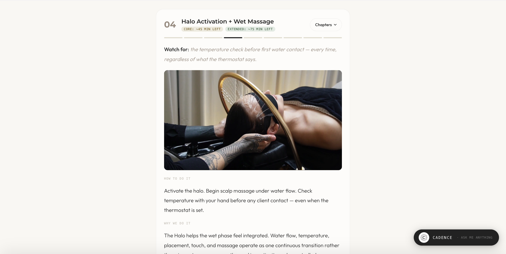
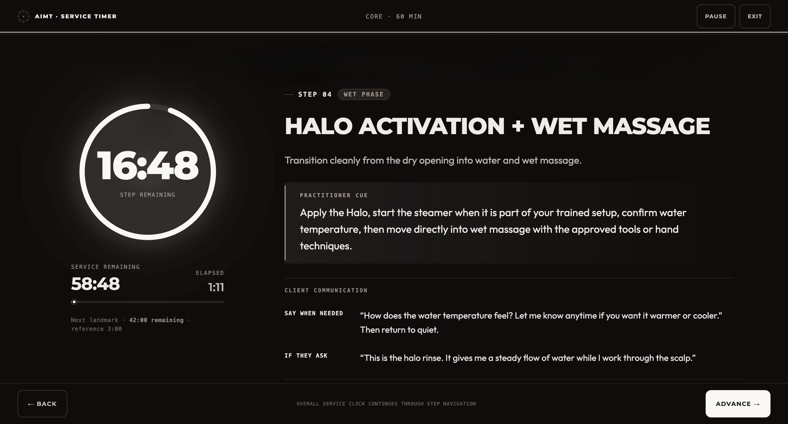
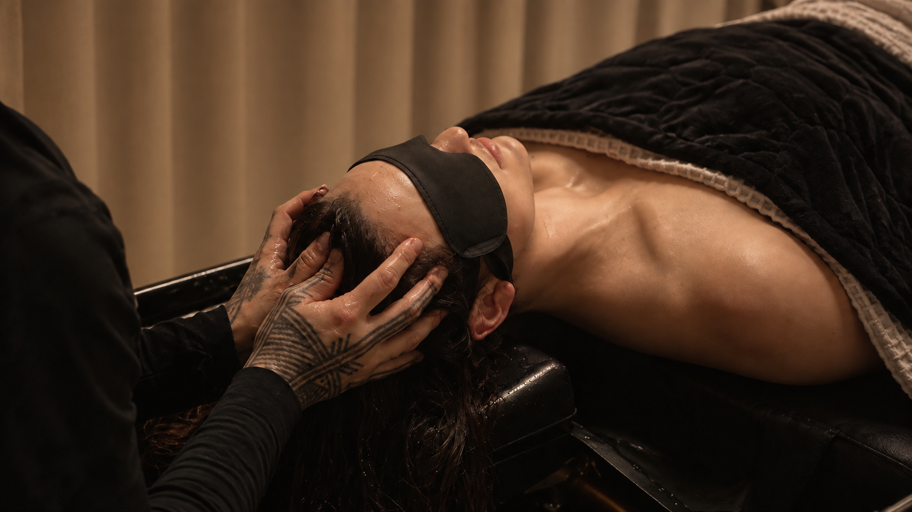

Get Better,
Faster.
Without cutting corners.
Learn scalp microscopy, the complete head spa service, and how to work confidently with clients.

A protocol can show you what comes next. Professional practice also asks you to notice what is changing, adapt the service, communicate clearly, and understand why you are making each decision. AIMT was built around that gap.
AIMT is designed to reduce the distance between learning a concept and being able to use it.
See the actual AIMT learning environment and the tools included in the certification.

Structured learning built around the complete service. Move through the Welcome Module and 12 numbered modules covering the service from client intake and scalp assessment through treatment execution, sanitation, pricing, and modern practice. The curriculum is designed to connect what you learn to the decisions you will actually make in the treatment room.
Ask me anything about this module. I can help you work through the material or look at something a different way.
If the crown looks oily but the hairline looks dry, am I supposed to choose one scalp type?
No. AIMT teaches you to plan from current findings by region, not force the whole scalp into one label. The crown may support more targeted cleansing while the hairline calls for a gentler approach.
So the service can change within the same appointment?
Yes. Keep the overall service cohesive, but adjust the levers that matter — cleansing, exfoliation, water and steam, pressure and tempo, and product placement — only where your assessment gives you a reason to.
That makes more sense. I thought I had to pick one protocol.
Think of the protocol as a framework, not a script. Preserve what does not need changing, modify what the evidence supports, and keep the client experience feeling like one intentional service.
Example conversation with your personal learning guide (Cadence). Illustrative, not a captured student session.
Your personal learning guide, built into the course. Ask questions without leaving the course, work through uncertainty, or have a concept explained from another angle. Cadence carries relevant learning context forward as you progress so the experience feels connected instead of like starting a new blank chat every time.
A different way to move through supported lessons. Listen to supported course content with Cadence while keeping the full learning structure intact. Playback pauses when a visual, video, interaction, or checkpoint needs your attention, then continues when you choose—so audio supports the course rather than replacing it.

Take the service structure into the treatment room. Smart Service Sidekick puts the current step, its purpose, practical instructions, and client-response cues beside you while you work. Follow step-by-step pacing and the next transition in the Core 60-minute or Extended 90-minute reference format, with hands-free scrolling and pause/resume controls. Included as an enrollment bonus.
Representative sample · not a live assessment-bank item
Your assessment shows the required standard has been met across Knowledge & Retention, Applied Practitioner Cases, and Practitioner Conversation, with all Critical Competencies cleared.
Certification is issued after required course progression and a passing Final Certification Assessment. Your credential carries a unique ID and can be verified through AIMT's public verification system.
Example Performance Review · illustrative scores, not a real student result
Certification is evaluated, not automatically unlocked. The Final Certification Assessment evaluates knowledge and retention, applied practitioner cases, and practitioner reasoning with Cadence. Students must meet the certification standards before the AIMT credential is issued.
Step-by-step service training from opening through reset, including flow, pacing, transitions, treatment execution, bodywork, cleansing, and finish.

Enter your own service price ($75–$300), clients per day (1–8), and operating days (1–7). Results are illustrative gross service revenue, not a prediction of demand or earnings.
The annual figure uses 48 operating weeks per year.
These figures are illustrative only — not a projection, promise, or guarantee. Actual results vary based on pricing, demand, utilization, operating costs, staffing, location, taxes, and other factors. Figures shown reflect gross service revenue only, not earnings, income, take-home pay, or profit.
AIMT founder Brandon Rice brings nearly 20 years behind the chair, including work as a professional educator. Together with fellow cosmetologist Cady, he built ATRIUM Head Spa & Wellness before developing AIMT's training and practitioner tools.
Read the founder's storyAIMT certification is earned through required course progression and successful completion of the Final Certification Assessment. Each issued credential carries a unique credential ID and can be verified through AIMT's public verification system.
- Exploring head spa and building a stronger foundation before offering it
- Preparing to launch a head spa service
- Already offering head spa and wanting more structure and consistency
- Refining an established service
AIMT is designed for practitioners who want to understand and apply the material, not simply complete content for a certificate.
Get Your AIMT Head Spa Readiness Score →See the full retake requirements
After an unsuccessful first attempt, you receive a Certification Performance Review and may move to Attempt 2 after the appropriate review. If Attempt 2 is unsuccessful, targeted remediation must be completed before Attempt 3 unlocks. If Attempt 3 is unsuccessful, an AIMT Educator Remediation Session is required before an educator may authorize Attempt 4. If Attempt 4 does not meet the standard, the case moves to Individual AIMT Review rather than an automatic fifth attempt. Critical-domain remediation can also be required before the next attempt whenever a critical domain remains uncleared.
Certification earned through the Final Certification Assessment